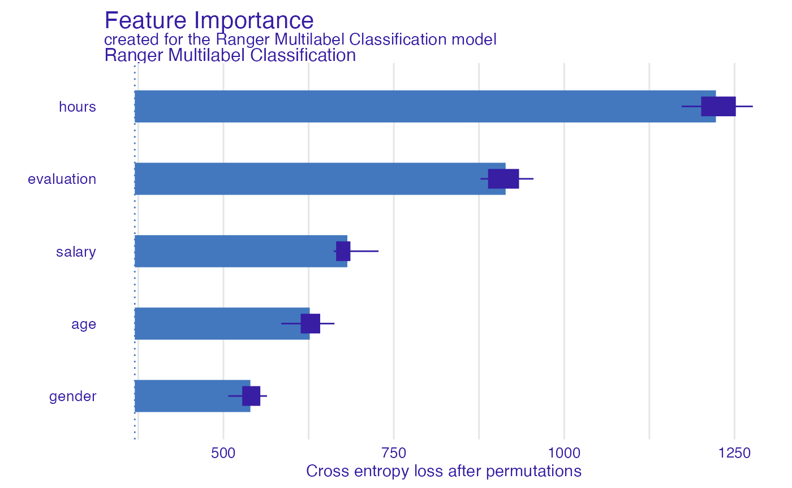
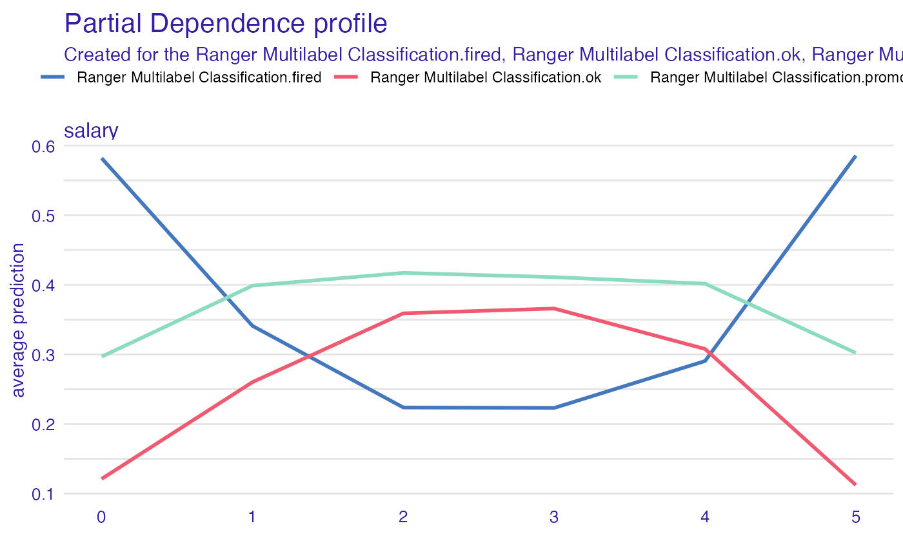
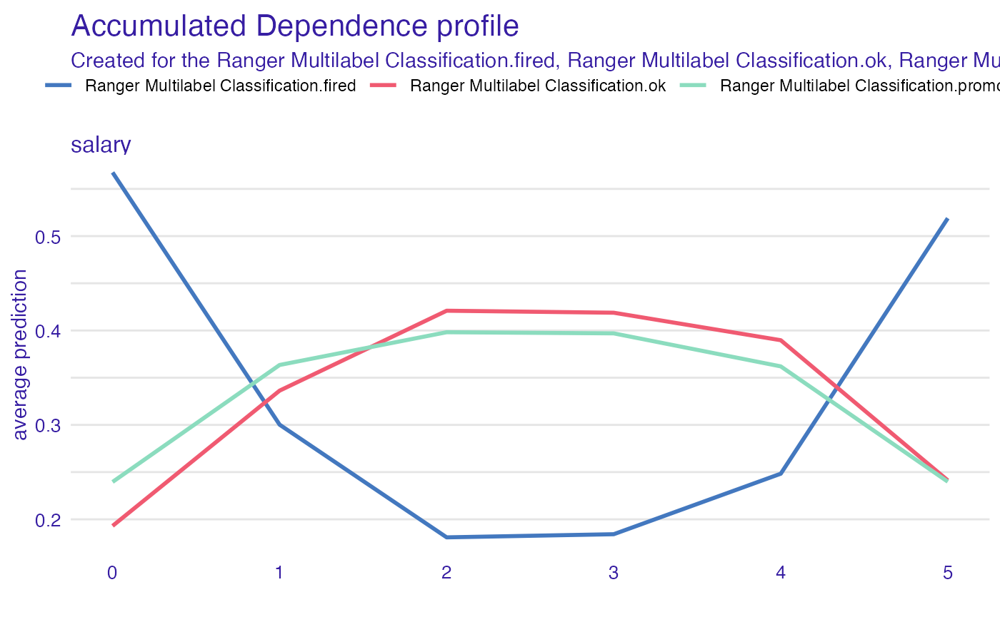
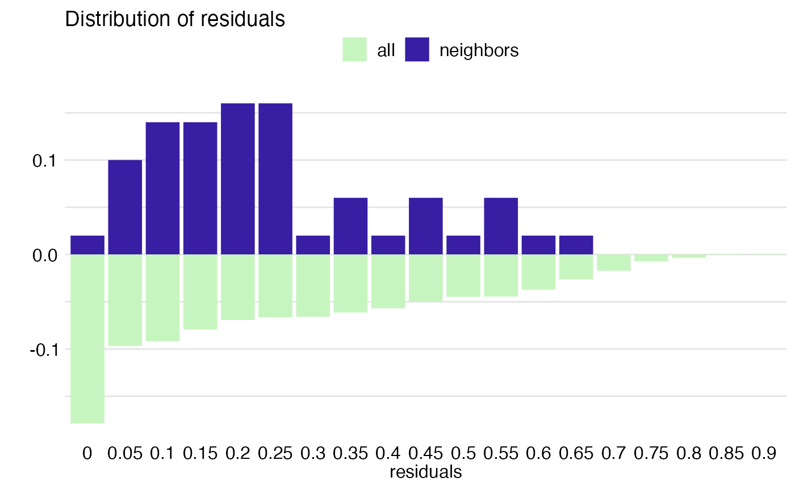
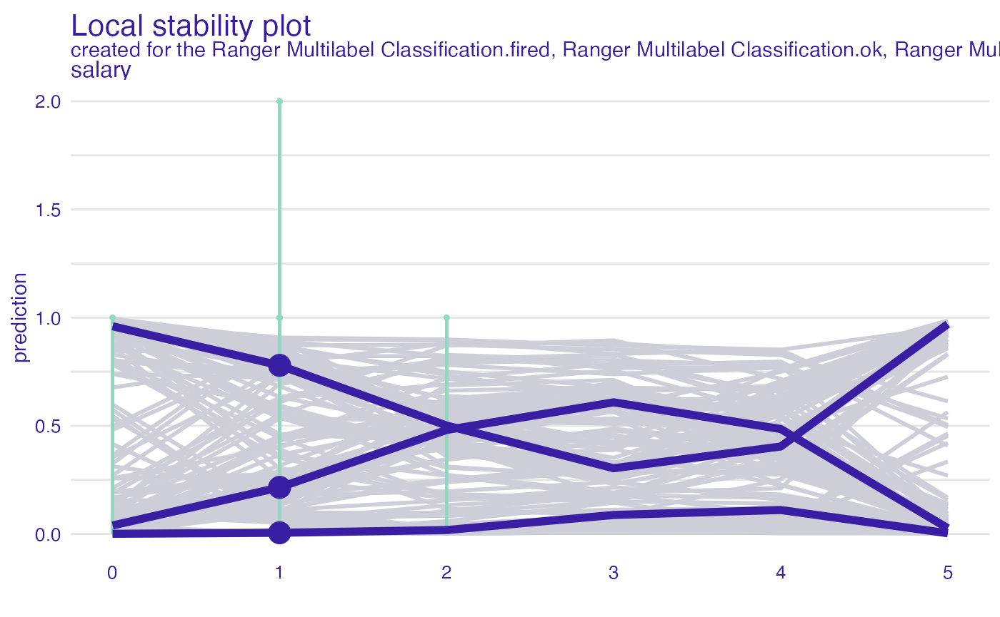

How to use multilabel classification and DALEX?
Szymon Maksymiuk
2022-01-25
Source:vignettes/multilabel_classification.Rmd
multilabel_classification.RmdData for HR example
In the following vignette, we will walk through a multilabel classification example with DALEX. The purpose of this tutorial is that for some of DALEX functionalities binary classification is a default one, and therefore we need to put some self-made code to work here. All of the examples will be performed with HR dataset that is available in DALEX, it’s target column is status with three-level factor. For all cases our model will be ranger.
#> gender age hours evaluation salary status
#> 1 male 32.58267 41.88626 3 1 fired
#> 2 female 41.21104 36.34339 2 5 fired
#> 3 male 37.70516 36.81718 3 0 fired
#> 4 female 30.06051 38.96032 3 2 fired
#> 5 male 21.10283 62.15464 5 3 promoted
#> 6 male 40.11812 69.53973 2 0 firedCreation of model and explainer
Ok, now it is time to create a model.
library("ranger")
model_HR_ranger <- ranger(status~., data = HR, probability = TRUE, num.trees = 50)
model_HR_ranger#> Ranger result
#>
#> Call:
#> ranger(status ~ ., data = HR, probability = TRUE, num.trees = 50)
#>
#> Type: Probability estimation
#> Number of trees: 50
#> Sample size: 7847
#> Number of independent variables: 5
#> Mtry: 2
#> Target node size: 10
#> Variable importance mode: none
#> Splitrule: gini
#> OOB prediction error (Brier s.): 0.2190324
library("DALEX")
explain_HR_ranger <- explain(model_HR_ranger,
data = HR[,-6],
y = HR$status,
label = "Ranger Multilabel Classification",
colorize = FALSE)#> Preparation of a new explainer is initiated
#> -> model label : Ranger Multilabel Classification
#> -> data : 7847 rows 5 cols
#> -> target variable : 7847 values
#> -> predict function : yhat.ranger will be used ( default )
#> -> predicted values : No value for predict function target column. ( default )
#> -> model_info : package ranger , ver. 0.13.1 , task multiclass ( default )
#> -> predicted values : predict function returns multiple columns: 3 ( default )
#> -> residual function : difference between 1 and probability of true class ( default )
#> -> residuals : numerical, min = 0 , mean = 0.280245 , max = 0.8874252
#> A new explainer has been created!The sixth column, that we have omitted during the creation of the explainer, stands for the target column (status). It is good practice not to put it in data. Keep in mind that the default yhat function for ranger, and for any other package that is supported by DALEX, enforces probability output. Therefore residuals cannot be standard \(y - \hat{y}\). Since DALEX 1.2.2 in the case of multiclass classification one minus probability of the TRUE class is a standard residual function.
Model Parts
In order to use model_parts() (former variable_importance()) function it is necessary to switch default loss_function argument to one that handle multiple classes. DALEX has implemented one function like that and it is called loss_cross_entropy(). To use it, y parameter passed to explain function should have exactly the same format as the target vector used for the training process (ie. the same number of levels and names of those levels).
Also, we need probability outputs so there is no need to change the default predict_function parameter.
library("DALEX")
explain_HR_ranger_new_y <- explain(model_HR_ranger,
data = HR[,-6],
y = HR$status,
label = "Ranger Multilabel Classification",
colorize = FALSE)#> Preparation of a new explainer is initiated
#> -> model label : Ranger Multilabel Classification
#> -> data : 7847 rows 5 cols
#> -> target variable : 7847 values
#> -> predict function : yhat.ranger will be used ( default )
#> -> predicted values : No value for predict function target column. ( default )
#> -> model_info : package ranger , ver. 0.13.1 , task multiclass ( default )
#> -> predicted values : predict function returns multiple columns: 3 ( default )
#> -> residual function : difference between 1 and probability of true class ( default )
#> -> residuals : numerical, min = 0 , mean = 0.280245 , max = 0.8874252
#> A new explainer has been created!And now we can use model_parts()
mp <- model_parts(explain_HR_ranger_new_y, loss_function = loss_cross_entropy)
plot(mp)
As we see above, we can enjoy perfectly fine variable importance plot.
Model Profile
There is no need for tricks in order to use model_profile() (former variable_effect()). Our target will be one-hot-encoded, and all of the explanations will be performed for each of class separately.
partial_dependency
mp_p <- model_profile(explain_HR_ranger, variables = "salary", type = "partial")
mp_p$color <- "_label_"
plot(mp_p)
accumulated_dependency
mp_a <- model_profile(explain_HR_ranger, variables = "salary", type = "accumulated")
mp_a$color = "_label_"
plot(mp_a)
Instance level explanations
As above, predict_parts() (former variable_attribution()) works perfectly fine with multilabel classification and default explainer. Just like before, our target will be split into variables standing for each factor level and computations will be performed then.

model_performance and predict_diagnostics
The description of those two functions is merged into one paragraph because they require the same action to get them to work with multilabel classification. The most important thing here is to realize that both functions are based on residuals. Since DALEX 1.2.2, explain function recognizes if a model is a multiclass classification task and uses a dedicated residual function as default.
Model Performance
(mp <- model_performance(explain_HR_ranger))#> Measures for: multiclass
#> micro_F1 : 0.8706512
#> macro_F1 : 0.8687873
#> w_macro_F1 : 0.8695486
#> accuracy : 0.8706512
#> w_macro_auc: 0.9771467
#>
#> Residuals:
#> 0% 10% 20% 30% 40% 50% 60%
#> 0.00000000 0.02854384 0.06439686 0.11939909 0.18117038 0.24789674 0.31700874
#> 70% 80% 90% 100%
#> 0.39543302 0.48738144 0.59188753 0.88742522
plot(mp)
Predict diagnostics
pd_all <- predict_diagnostics(explain_HR_ranger, HR[1,])
plot(pd_all)
pd_salary <- predict_diagnostics(explain_HR_ranger, HR[1,], variables = "salary")
plot(pd_salary)
Session info
#> R version 4.1.2 (2021-11-01)
#> Platform: x86_64-apple-darwin17.0 (64-bit)
#> Running under: macOS Big Sur 10.16
#>
#> Matrix products: default
#> BLAS: /Library/Frameworks/R.framework/Versions/4.1/Resources/lib/libRblas.0.dylib
#> LAPACK: /Library/Frameworks/R.framework/Versions/4.1/Resources/lib/libRlapack.dylib
#>
#> locale:
#> [1] en_US.UTF-8/en_US.UTF-8/en_US.UTF-8/C/en_US.UTF-8/en_US.UTF-8
#>
#> attached base packages:
#> [1] stats graphics grDevices utils datasets methods base
#>
#> other attached packages:
#> [1] ranger_0.13.1 DALEX_2.3.0.9002
#>
#> loaded via a namespace (and not attached):
#> [1] tidyselect_1.1.1 xfun_0.29 bslib_0.3.1 purrr_0.3.4
#> [5] lattice_0.20-45 colorspace_2.0-2 vctrs_0.3.8 generics_0.1.1
#> [9] htmltools_0.5.2 yaml_2.2.1 utf8_1.2.2 rlang_0.4.12
#> [13] pkgdown_2.0.2 jquerylib_0.1.4 pillar_1.6.4 glue_1.6.1
#> [17] lifecycle_1.0.1 stringr_1.4.0 munsell_0.5.0 gtable_0.3.0
#> [21] ragg_1.2.1 memoise_2.0.1 evaluate_0.14 labeling_0.4.2
#> [25] knitr_1.37 fastmap_1.1.0 fansi_1.0.2 highr_0.9
#> [29] iBreakDown_2.0.1 Rcpp_1.0.8 scales_1.1.1 cachem_1.0.6
#> [33] desc_1.4.0 jsonlite_1.7.3 ingredients_2.2.0 farver_2.1.0
#> [37] systemfonts_1.0.3 fs_1.5.2 textshaping_0.3.6 ggplot2_3.3.5
#> [41] digest_0.6.29 stringi_1.7.6 dplyr_1.0.7 grid_4.1.2
#> [45] rprojroot_2.0.2 tools_4.1.2 magrittr_2.0.1 sass_0.4.0
#> [49] tibble_3.1.6 crayon_1.4.2 pkgconfig_2.0.3 ellipsis_0.3.2
#> [53] Matrix_1.3-4 gower_0.2.2 rmarkdown_2.11 R6_2.5.1
#> [57] compiler_4.1.2